Pertanian
Cara membaca pH tanah sebelum tanam
pH menentukan apakah unsur hara bisa diserap akar. Cek dulu sebelum membeli pupuk.
Baca tips →AgroNusa merangkum dasar budidaya pertanian, perkebunan, peternakan, perikanan, dan teknologi agro dalam bahasa yang mudah dipakai di lapangan.
Lima kategori, masing-masing berisi komoditas utama dan tips budidaya.





Padi, jagung, sayuran, dan buah: sumber pangan harian dan pemasukan petani.
Kopi, kelapa sawit, kelapa, dan tebu: tanaman jangka panjang untuk pasar luas.
Sapi, ayam, kambing, dan bebek: pilih sesuai modal, lahan, dan waktu Anda.
Lele, nila, udang, dan bandeng: kunci utamanya selalu kualitas air.
Hidroponik, smart farming, dan drone tani untuk bekerja lebih efisien.
Semua materi disusun ringkas: penjelasan singkat, fakta kunci, dan tips yang bisa langsung dicoba di lahan, kandang, atau kolam Anda.
Lihat Semua KategoriKata agro berkaitan dengan pertanian dalam arti luas: menanam tanaman, merawat kebun, beternak, membudidayakan ikan, sampai memanfaatkan teknologi agar kerja lebih ringan dan hasil lebih baik.
Hidroponik untuk lahan sempit, sensor dan irigasi otomatis untuk memantau lahan, serta drone untuk menyemprot dan memetakan area luas.
Lihat teknologi agroDari membaca pH tanah sampai biosekuriti kandang, semua ada di artikel kami.
Semua ArtikelTulis pertanyaan Anda, kami bantu arahkan ke informasi yang tepat.
Hubungi KamipH menentukan apakah unsur hara bisa diserap akar. Cek dulu sebelum membeli pupuk.
Baca tips →Buah yang dipetik tepat matang memberi rasa dan harga yang lebih baik.
Baca tips →Mencegah penyakit masuk jauh lebih murah daripada mengobati.
Baca tips →